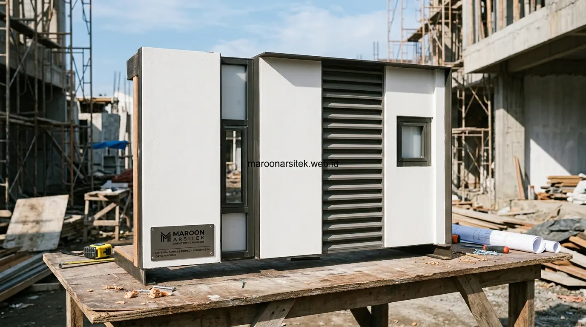

Kontraktor rumah minimalis yang andal menerapkan verifikasi sampel material dan mock-up skala kecil sebelum aplikasi penuh pada fasad, memastikan warna, tekstur, dan proporsi benar-benar sesuai dengan visualisasi 3D sebelum dikerjakan pada skala sebenarnya. Maroon Arsitek menerapkan metode verifikasi bertahap ini melalui layanan inovasi kontraktor rumah minimalis presisi untuk menjamin hasil akhir fasad hunian modern sesuai ekspektasi klien.
Kekecewaan terhadap hasil fasad yang berbeda dari visualisasi 3D sering disebabkan oleh ketidaksesuaian yang baru disadari setelah material diaplikasikan secara penuh, padahal masalah ini dapat dicegah melalui proses verifikasi bertahap sebelum eksekusi skala besar dilakukan. Bersama panduan mencegah kesalahan bangun rumah, bagian berikut menguraikan metode verifikasi yang diterapkan untuk memastikan presisi hasil akhir fasad hunian Anda.
Verifikasi Sampel Material Sebelum Aplikasi Skala Penuh
Verifikasi sampel material dilakukan dengan menguji warna dan tekstur cat, panel kayu komposit, batu alam, atau material pelapis lain pada area kecil fasad, sebelum material tersebut diaplikasikan pada keseluruhan bidang fasad rumah. Metode ini sangat penting diterapkan oleh tim kontraktor rumah profesional guna mencegah ketidaksesuaian warna yang baru terlihat setelah seluruh permukaan dinding selesai dikerjakan.
Sampel diuji pada kondisi pencahayaan alami di lokasi proyek, karena warna material dapat terlihat berbeda tergantung intensitas dan arah cahaya matahari yang mengenai fasad pada waktu-waktu tertentu sepanjang hari.
Persetujuan klien terhadap sampel material dilakukan secara tertulis sesuai SOP material bangunan sebelum pengerjaan skala penuh dimulai, memberikan dasar yang jelas apabila terjadi perbedaan pendapat mengenai kesesuaian hasil akhir dengan sampel yang telah disetujui sebelumnya.
Pengujian Sampel pada Kondisi Pencahayaan Alami
Kebutuhan akurasi warna yang sesuai kondisi nyata dijawab melalui pengujian sampel material pada kondisi pencahayaan alami di lokasi proyek, mempertimbangkan variasi warna yang mungkin terjadi akibat perbedaan intensitas cahaya matahari sepanjang hari.
Pengujian ini mencegah kekecewaan yang muncul ketika warna terlihat berbeda antara ruang pamer material (*showroom*) dan kondisi aktual di lokasi fasad rumah yang memiliki karakteristik pencahayaan berbeda-beda tergantung orientasi arah mata angin bangunan. Hal ini menyempurnakan konsep desain rumah minimalis modern yang dirancang sejak awal.
Kontrol Proporsi Elemen Fasad melalui Mock-Up Skala Kecil
Mock-up skala kecil dibuat untuk elemen fasad dengan detail kompleks, seperti kombinasi material, kisi-kisi *secondary skin*, kanopi kantilever, atau bentuk bukaan jendela besar, memungkinkan klien dan tim konstruksi memverifikasi proporsi sebelum elemen tersebut dikerjakan pada skala penuh bangunan. Metode ini efektif untuk mendeteksi ketidaksesuaian proporsi sejak dini pada proyek jasa bangun rumah dari nol.
Mock-up dibuat menggunakan material sesungguhnya pada skala yang lebih kecil, memberikan gambaran nyata mengenai bagaimana elemen tersebut akan terlihat ketika diterapkan pada fasad, berbeda dari visualisasi digital yang terkadang belum sepenuhnya merepresentasikan hasil fisik.
Evaluasi terhadap mock-up melibatkan diskusi antara klien, arsitek perencana dari tim jasa desain arsitek, dan tim pelaksana lapangan, memastikan seluruh pihak memiliki pemahaman yang sama mengenai hasil akhir yang diharapkan sebelum pengerjaan skala penuh dimulai di lapangan.

Perbandingan Mock-Up Fisik dengan Visualisasi Digital
Kebutuhan validasi antara desain digital dan hasil fisik dijawab melalui perbandingan langsung antara mock-up fisik skala kecil dengan visualisasi 3D digital dan gambar kerja, mengidentifikasi apabila terdapat perbedaan yang perlu disesuaikan sebelum pengerjaan skala penuh.
Perbandingan ini membantu menjembatani kesenjangan antara representasi digital yang terkadang idealis dengan kondisi material fisik yang memiliki karakteristik tekstur, berat, dan toleransi pemuaian tersendiri saat diaplikasikan secara nyata di lapangan.
Dokumentasi Perbandingan Visual Sepanjang Proses Konstruksi
Dokumentasi perbandingan visual dilakukan secara berkala sepanjang proses konstruksi, membandingkan progres fasad aktual dengan render 3D pada sudut pengambilan gambar yang sama, sehingga penyimpangan dapat terdeteksi lebih awal sebelum pekerjaan berlanjut lebih jauh. Metode ini menjadi bagian dari pengawasan ketat yang diselaraskan dengan rincian estimasi biaya bangun rumah dan spesifikasi teknis proyek.
Pengambilan foto progres dilakukan pada titik dan sudut yang konsisten dengan sudut pandang render 3D awal, memudahkan perbandingan visual yang akurat antara rencana dan realisasi pada setiap tahap perkembangan fasad hunian.
Dokumentasi ini turut menjadi bahan laporan berkala bagi klien yang tidak dapat memantau lokasi secara langsung setiap hari, memberikan bukti visual transparan bahwa progres pengerjaan di portofolio proyek Maroon Arsitek tetap berjalan sesuai standar estetika yang disepakati.
Konsistensi Sudut Pengambilan Gambar untuk Perbandingan Akurat
Kebutuhan perbandingan visual yang valid dijawab melalui konsistensi sudut dan titik pengambilan gambar dokumentasi, disesuaikan dengan sudut pandang yang sama dengan render 3D awal, sehingga perbandingan yang dilakukan benar-benar mencerminkan kesesuaian hasil aktual.
Konsistensi ini penting agar evaluasi kesesuaian fasad tidak bias akibat perbedaan perspektif lensa atau sudut kamera, yang dapat membuat evaluasi menjadi tidak objektif terhadap kondisi presisi fasad di lapangan.